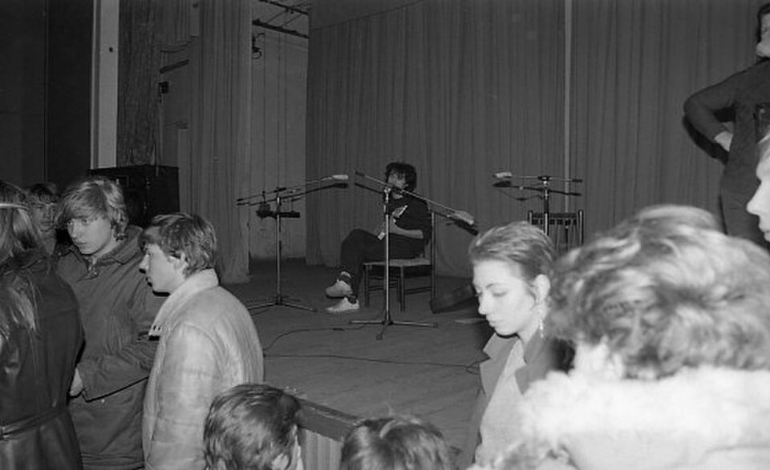

Niche-fy
Welcome to Niche-fy, the ultimate website for
discovering niche music from all over the world!

https://commons.wikimedia.org/w/index.php?search=viktor+tsoi+kino&title=Special%3AMediaSearch&type=image